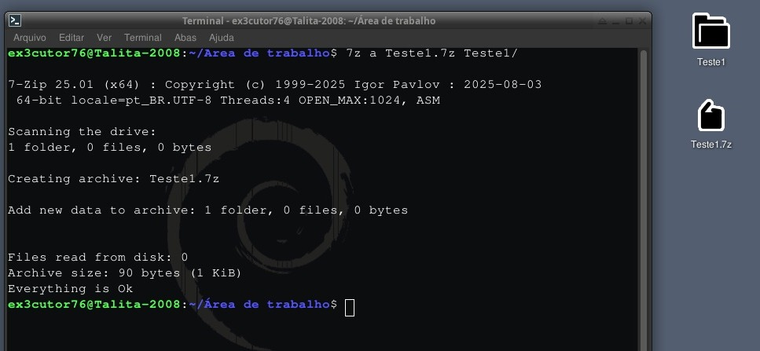
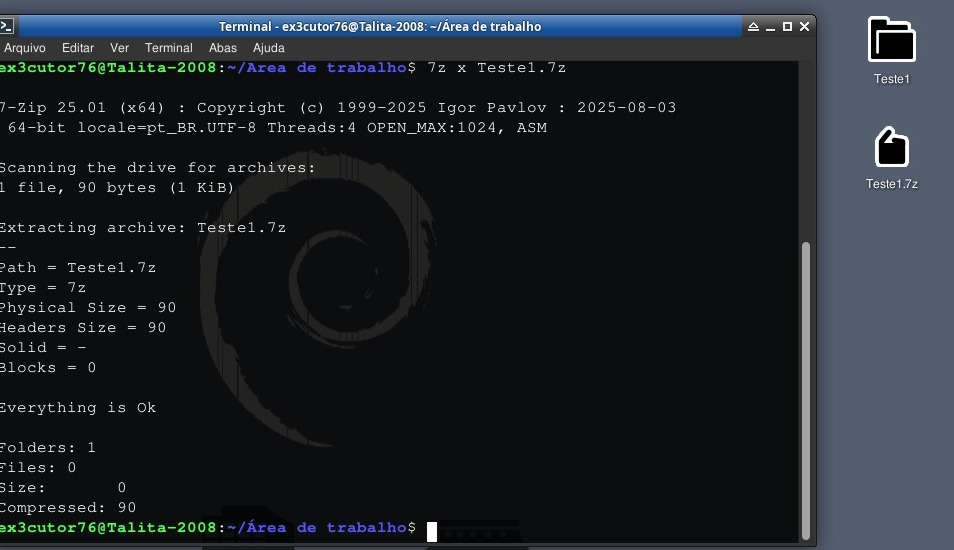

.7z:
Finalmente algum que sai do tar né? Bem aqui vai como compactar ou descompactar uma pasta .7z só vamos precisar de uma ferramenta
chamada de p7zip-full (Que para instalar use: sudo apt install p7zip-full)

Pois é esse aqui é bem diferenciado mesmo e bem fácil também e aqui está a forma de como compactei:
7z a arquivo.7z arquivo/
E bem o "a" significa algo como adicionar ou criar arquivo, então sim o "a" não é a toa.
Hora de descompactar:

Bem aqui eu utilizei o comando: 7z x arquivo.7z para descompactar, fácil né?
E bem o "x" significa extrair, então sim ele não é a toa de novo.